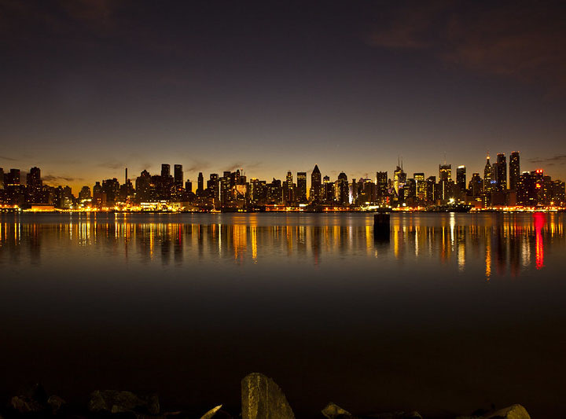

Welcome to New York City, where every borough has its own sound, style, and impact on hip-hop culture.
You are about to take a trip through the five boroughs and learn how each one helped shape music, fashion, identity, and youth culture.
Choose your borough and see where the culture takes you.